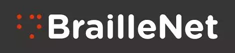

BEMBIDE - GABIRAULT
Emmanuel - Olivier
13 rue Camille Flammarion
77000 Melun (France).
Téléphone : +33(0) 7 81 40 46 80.
Courriel : gabiraultbembide@gmail.com .
Responsable qualité web, accessibilité numérique et SEO.
Assistance à la maitrise d'œuvre - Pilotage de projets web.
Présentation.
J'accompagne et encadre vos projets web, du recueil des besoins utilisateurs à la livraison finale du site avec une expertise UX qualité web, accessibilité numérique et SEO. Je propose également des solutions pour améliorer directement la qualité et l'accessibilité de votre site.
Compétences et expertise métier.
Informatiques :
Accessibilité :
Qualité web :
SEO :
WordPress :
Mes outils :
Maitrise du HTML5, WAI-ARIA, CSS3, JavaScript, Php, SQL. Maitrise du Framework
Boostrap et Symfony. Des logiciels
Adobe InDesign CS6 - Acrobat Pro DC - Photoshop. De Git et Github, de WordPress. Excel, Word, powertpoint etc...
Capable de rendre un site web accessible. Maîtrise des bonnes pratiques accessibilité web.
Audit, suivi et évaluation de sites web avec le Référentiel Général d'Accessibilité pour les Administrations (RGAA 4.1).
Rédaction de rapport d'audit - Maitrise des notices d'accessibilité Accede-web, adaptés à la gestion de projets.
Recommandations d'améliorations - Accessibilité des documents PDF - CMS et javascript accessible - Sous-titrage.
Capable d'améliorer la qualité d'un site web. Maîtrise des bonnes pratiques qualité Opquast.
Audit, suivi et évaluation de sites web - Suivi en phase de production de sites web - Rédaction cahier des charges.
Méthode d'évaluation et d'amélioration continue - Recommandation d'améliorations - Pilotage parc de site - AMOA
Maitrise des bonnes pratiques qualité Opquast, des objectifs associés et des risques cotés utilisateurs...
Capable d'améliorer la visibilité d'un site web. Maitrise des bonnes pratiques du SEO.
Stratégies et techniques SEO - Évaluation des trafics engendrés par le positionnement - Recherche des mots clés.
Audit SEO - Maitrise des techniques d'indexation des pages web - Optimisation du positionnement par les techniques.
Maîtrise des facteurs bloquant et pénalités Google - SEM(Search Engine Marketing) - Suivi du référencement etc.
Capable de créer des thèmes et sites WordPress de qualité, accessible et optimisé pour le SEO.
Réglages du CMS - Choix de thème et paramétrages des extensions - Sécurité et WordPress - Audit site WordPress.
Personnalisation de thèmes enfants - Création de thème WordPress à partir d'une maquette HTML - WordPress MU.
Référencement WordPress avancé - Mise en ligne ou migration de site web - Traduction de thèmes et extensions.
Liste non exhaustive de mes outils favoris.
Sublime text 3 - Acrobat Pro 9 - Colour Contrast Analyser - Github - ProjectLibre - Pencil - AnswerThePublic. UberSuggest - GoogleTrends -
ScreamingFrog - LanguageTools - Gimp - NVDA - Web developper - Wapalyser - RGAA 4.1.
giftofspeed.com - Seomofo - XruleGG - Compressor.io - Plagiarism-checker - Ezgif.com - Webconfs - Google analytic.
Expériences professionnelles.
2019 - Auj :

2019 - Auj :
2019 - Auj :
Bénévole à l'association BrailleNet - Yvry-sur-Seine - France.
Adaptation des livres numériques pour les personnes handicapés - Controle de la structure générale des livres - Ajout des textes alternatifs aux éléments graphiques - Corrections des erreurs d'ortographes et de typographie etc.
https://www.socle-seo.fr - (projet en cours... Pour en savoir plus : github.com/olivier-bembide).
Concepteur, rédacteur, référenceur, développeur auteur et maintenancier du site https://www.socle-seo.fr .
SocleSEO : Entreprise de conseils et d'accompagnement en qualité web, en accessibilité numérique et en SEO.
https://www.kadoweb.fr - (projet en cours... Pour en savoir plus : github.com/olivier-bembide).
Concepteur, rédacteur, référenceur, développeur auteur et maintenancier du site https://www.kadoweb.fr .
Blog personnel dédié à l'accessibilité numérique. Tutoriels et articles en accessibilité web.
Formations.
2016 - Auj :
2014 - 2016 :
2008 - 2012 :
Formation en autodidacte : Conception, rédaction et développement web - Melun (France).
HTML5 - WAI-ARIA - CSS3 - JavaScript - Php - Qualité web - Accessibilité web - Ergonomie web - SEO - WordPress.
Master 1 en économie et management des entreprises - Université de Lille 1 - France.
Master 1 en économie de projets - Université de Bangui - République Centrafricaine.
Pilotage de projets - Estimation budgétaire - Management d'équipe.
Centres d'intérêt et qualités personnelles.
Lecture :
Langues :
Soft Skill :
Lecture des livres sur la rédaction web, l'ergonomie web, l'accessibilité web,la qualité web, la lisibilité web et le SEO.
de HTML5, CSS3, JavaScript, Php, Symfony, WordPress, Conduite de projets web etc...
Anglais (niveau universitaire) - Français (niveau soutenu).
Calme, curieux et attentif, j'aime les défis. J'aime apprendre et apprendre des autres, c'est pourquoi je privilégie le travail en équipe. J'adore prendre du recul face à une situation, me remettre en question et chercher à m'améliorer.